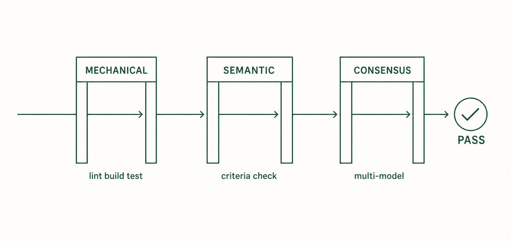

8. Evaluate
In chapter 7 the runtime built the to-do app. Evaluation verifies whether that result satisfies the Seed's completion criteria.
8.1 What it does
ooo evaluate verifies the execution result in three stages. Use it when a run finishes, or when evaluation did not follow automatically. The input is the session_id printed by the run.
8.2 Run
Run this inside the Claude Code session.
ooo evaluate <session_id>Expected result: per-stage pass results and a verdict on the completion criteria. Per the official docs, a finished run may still be in an unverified state before formal evaluation, so run this yourself if evaluation did not follow.
8.3 The 3 stages

| Stage | Content | Pass condition |
|---|---|---|
| 1. Mechanical | Auto-detects the project type and runs lint, build, test, static analysis, and coverage commands. No LLM involved. | All checks exit normally. Default coverage threshold 70% |
| 2. Semantic | An LLM compares the result against the Acceptance Criteria and scores it. | Criteria judged met, plus a score of 0.8 or higher |
| 3. Consensus | Multiple models vote independently on approval. Runs only under specific conditions. | At least a two-thirds majority approves |
The 6 conditions that trigger Consensus
After stage 2 passes, the conditions below are checked in priority order, and the first match triggers stage 3. If none match, the result is approved immediately.
- The Seed was modified
- The Ontology (data structure) changed
- The Goal was reinterpreted
- The Drift score exceeded 0.3
- Stage 2's uncertainty exceeded 0.3
- An alternative approach was adopted
Separately, if you request Consensus directly, it runs with priority over the conditions above.
Drift is a 0-to-1 value showing how far the result moved from the original Seed's intent. Lower means the original direction was kept. Low drift does not mean the feature is correct, so read it together with the criteria verdict.
8.4 Check the result yourself
Do not stop at the pass message. For the to-do example, open the app in a browser and reproduce each Acceptance Criterion.
- Check that an empty title is not added.
- Add a to-do, refresh, and check it is still there.
- Check the done state shows immediately and is stored.
8.5 Difference from ooo qa
ooo evaluate is the formal procedure that verifies a whole execution session. ooo qa is a one-shot check comparing a single file or text against a quality bar.
ooo qaExpected result: one of pass, revise, or fail, with reasons. A score of 0.80 or higher is pass; below 0.40 is fail. Works without an execution session.
8.6 Definition of done
- The 3-stage evaluation ended in a pass.
- You reproduced the Acceptance Criteria on the actual result.
- Remaining issues, if any, are noted. They become the input to chapter 9.